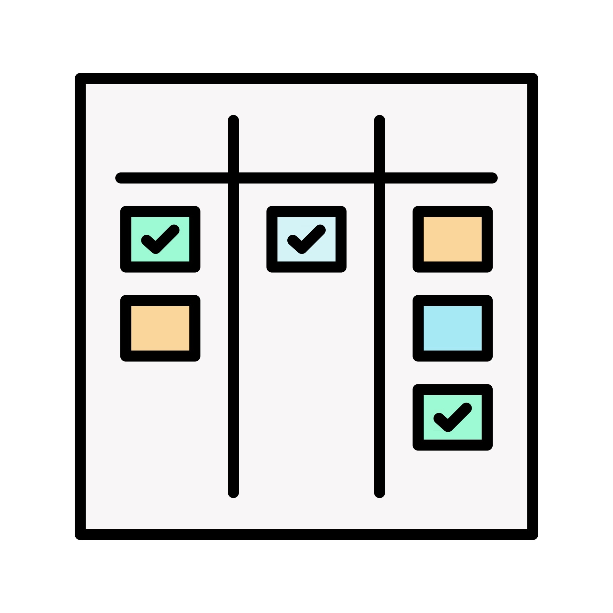

<div class="start-page">
  <div class="logo">
    
    <p class="logo__name">task board</p>
  </div>

  <div class="authorization"  >
      <app-login-form *ngIf="isRegistered"
        (goToSignup)="switchToSignup()"
      ></app-login-form>
      
      <app-signup-form *ngIf="!isRegistered"
        (goToLogin)="switchToLogin()"
      ></app-signup-form>
  </div>
</div>